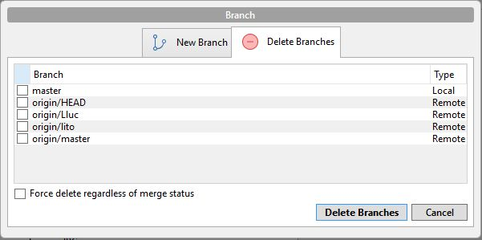

Git con SourceTree
Como crear un repositorio
En SourceTree, podemos vincular una cuenta de GitHub o GitBucket y a partir de aqui, si seleccionamos la primera opción de la barra de arriba, podremos crear un repositorio nuevo a nuestra cuenta.
Git Init
Para inicializarlo solo es necesario clonar el repositorio con SourceTree y automáticamente se inicializa.
Git Clone
Para clonar un repositorio, necesitamos lo primero, la dirección de este, una vez obtenida, seguiremos estos paso en SourceTree; 1)Abrimos SourceTree y seleccionamos la opcion de arriba a la derecha Clone/New. 2)Introducimos la ruta del repostiorio. 3)Configuramos las opciones que queramos y Clone.

Guardar cambios
¿Cómo hacer un commit?
Con SourceTree es bastante sencillo realizar un Commit, ya que tendremos dentro de esta opción, lo que vendría a ser también el Git add, a continuación se puede observar

Deshacer cambios
Para deshacer cambios desde SourceTree se hace de una forma bastante sencilla
Solo tendriamos que seleccionar el boton Discard, y seleccionar los archivos que queremos recuperar
Uniendo "historias"
Git merge
Para realizar un merge en SourceTree también tenemos la opción en la barra superior lo que no nos crea mucha dificultad a la hora de juntar varias ramas con la Master y así tener todos los cambios disponibles
Opciones de Ramas
Git branch
Para realizar un "Git branch" con SourceTree es tan sencillo como darle a la opcion de Branch en la barra superior, y nos saltará un menú donde introducir el nombre de la nueva rama, damos OK y se habrá creado
Git checkout
Para seleccionar otra rama, lo que debemos hacer es situarnos en la pagina princal de la aplicación, y darle doble click a la rama que queremos acceder.
Como eliminar una rama
Para eliminar una rama, seleccionamos el botón de Branch, y tenemos dos opciones en la barrita de arriba, seleccionamos Delete Branches y seleccionamos la rama a borrar.
